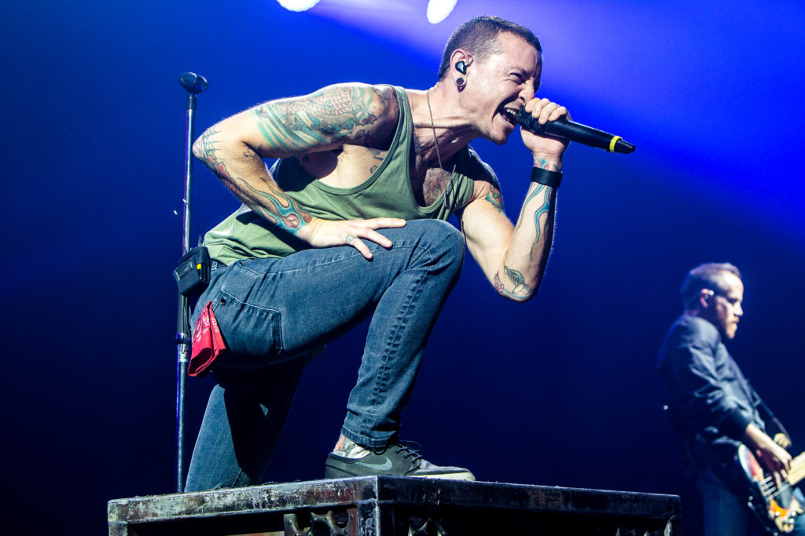
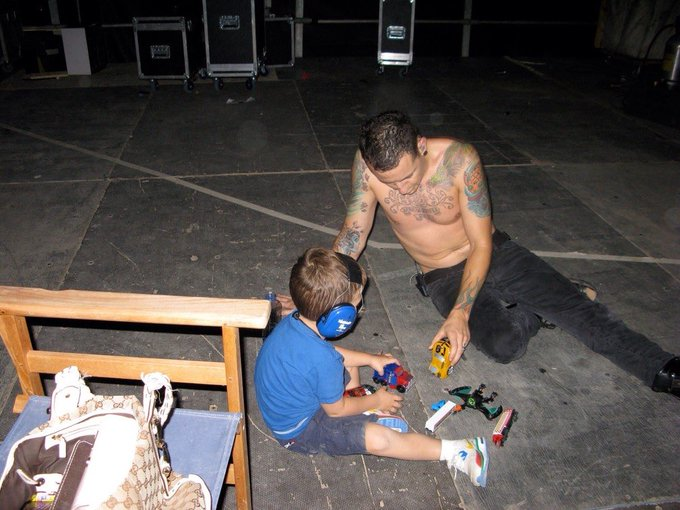
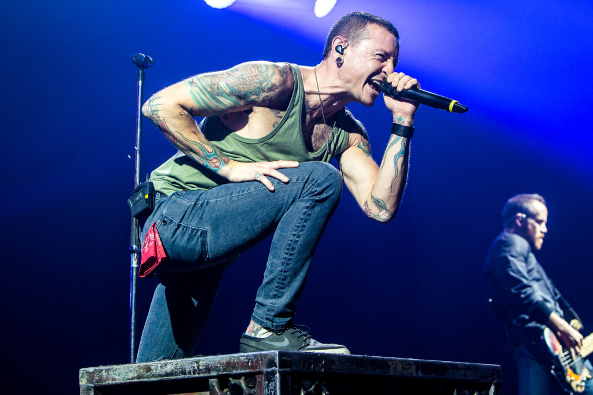
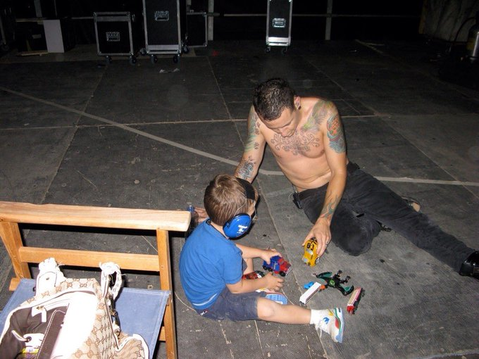

One More Light (Live)
Tributo emocionante à memória de Chester
20 de março de 1976 — 20 de julho de 2017
"A vida é curta demais para desperdiçar tempo odiando alguém."
Nasceu em Phoenix, Arizona. Desde cedo mostrou paixão pela música e interesse em bandas de rock.
Começou sua carreira musical em bandas locais, incluindo Grey Daze, onde desenvolveu seu estilo vocal característico.
Juntou-se aos Linkin Park, substituindo Mark Wakefield. Esta decisão mudaria sua vida e a história do rock moderno.
Lançamento do álbum de estreia que o catapultou para a fama mundial. "In the End" e "Crawling" tornaram-se hinos de uma geração.
Anos de criação musical intensa, tours mundiais, prémios Grammy, e a consolidação como uma das vozes mais icónicas do rock.
Tornou-se porta-voz de causas relacionadas com saúde mental e abuso infantil, usando sua plataforma para ajudar outros.
Chester deixou-nos fisicamente, mas seu legado musical, sua honestidade sobre saúde mental e seu impacto continuam vivos.
Uma das vozes mais reconhecíveis e poderosas do rock moderno, capaz de transmitir emoção bruta e vulnerabilidade.
Falou abertamente sobre suas lutas com depressão, abuso e vícios, ajudando a quebrar estigmas sobre saúde mental.
Ajudou a definir o som do nu-metal e rock alternativo, influenciando inúmeras bandas e artistas.
Dedicou-se a causas sociais, especialmente relacionadas com abuso infantil e prevenção do suicídio.
 



Tributo emocionante à memória de Chester
Uma das performances mais icónicas
Momentos marcantes e entrevistas
A saúde mental é tão importante quanto a saúde física. Se tu ou alguém que conheces está a lutar, procura ajuda. Nunca estás sozinho.
A melhor forma de honrar a memória de Chester é continuar sua missão: ser gentil uns com os outros, falar sobre saúde mental, apoiar quem está a lutar, e lembrar que a vida é preciosa. Se estás a passar por momentos difíceis, procura ajuda. Tu importas.
#MakeChesterProud